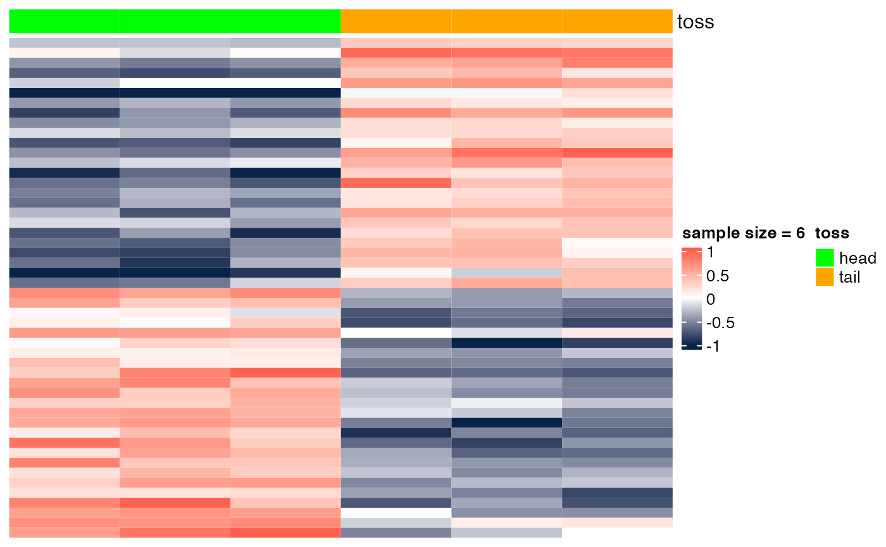
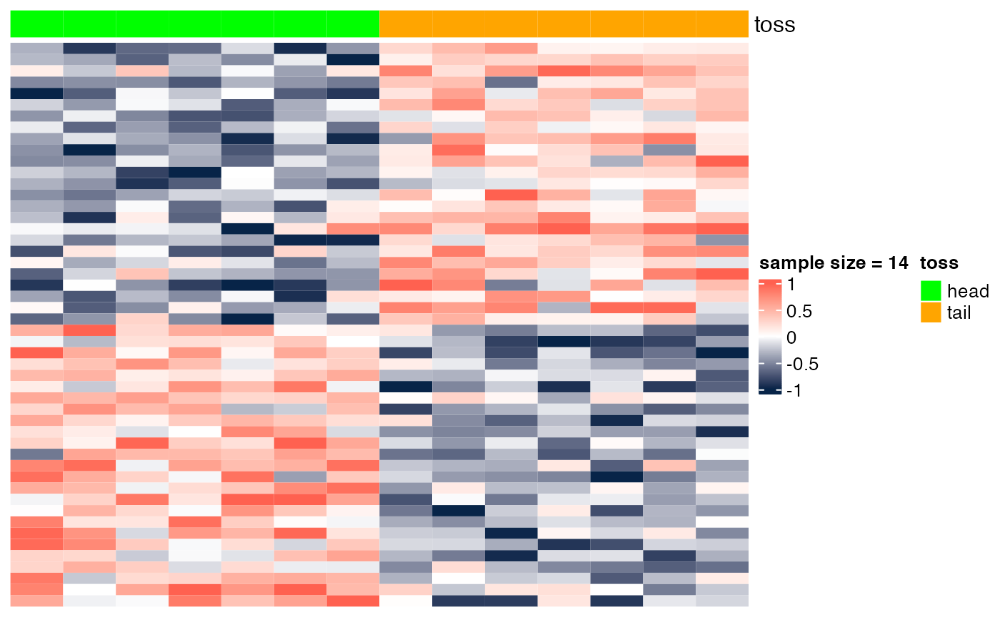
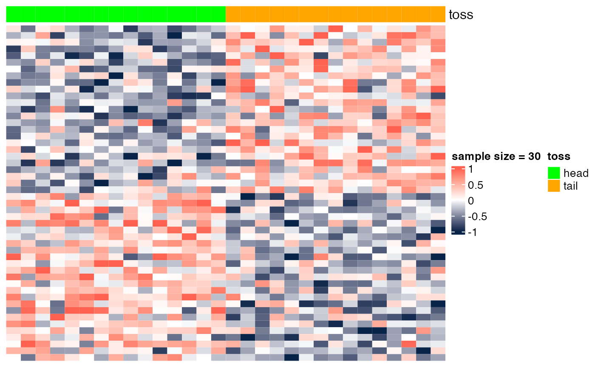
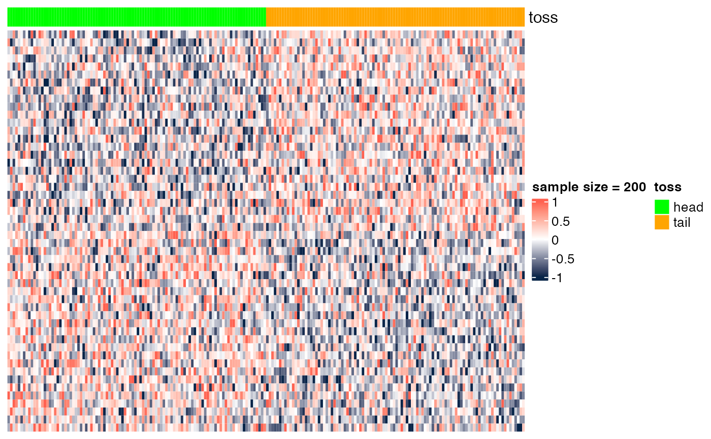

Sample Size and Statistical Significance
Stefano Monti
Source:vignettes/docs/SampleSize.Rmd
SampleSize.RmdIn this module, we show how testing for multiple hypotheses (genes) can increase the chance of false positives, especially for small sample sizes.
Nrow <- 10000
Ncol <- 200Sample Size's effect on heatmap visualization
Here we show the scenario presented in class (slide "Gene markers selection: better than chance?"). In the examples below, we show heatmaps corresponding to random noise, and we show that, if enough hypotheses are tested (in this case, 10^{4}), and the sample size is sufficiently small (e.g., n=6), we can easily identify 'genes' whose expression pattern seems to be strongly associated with the phenotype (in this case, a random head/tail), as suggested by the heatmap with a clear blue-to-red pattern. As the sample size increases (e.g., n=200), it is more difficult to be 'fooled', as the corresponding heatmap shows a less clear blue-to-red pattern.
Data generation
We start by generating a large [10^{4}x200] matrix filled with random values drawn from a Gaussian distribution with mean=0 and stdev=0.5.
set.seed(123) # for reproducible results
DAT <- matrix(rnorm(Ncol*Nrow,mean=0,sd=0.5),nrow=Nrow,ncol=Ncol)
hist(DAT)
We then pick a small subset of columns from this matrix and randomly assign them a binary (head-tail) phenotype. We then pick the top 25 markers associated to head and tail, and plot the corresponding heatmaps.
Heatmaps ~ sample size
heatmap_wrapper <- function(DAT, Ncol, ndraw) {
## randomly select Ncol columns from the full matrix
DATi <- DAT[, colDraw <- sample(Ncol, size = ndraw)]
## generate a (head/tail) phenotype of proper size
pheno <- factor(rep(c("head", "tail"), each = ndraw / 2))
## perform t.test on each data row with respect to the random phenotype
DIFi <- t(apply(DATi, 1, tscore, x = pheno))
## pick top 25 markers in each direction
topMarkers <- c(
order(DIFi[, 1], decreasing = FALSE)[1:25],
order(DIFi[, 1], decreasing = TRUE)[1:25]
)
## visualize the corresponding heatmap of 50 markers
annot_col <- ComplexHeatmap::HeatmapAnnotation(
toss = pheno,
col = list(toss = c("head" = "green", "tail" = "orange"))
)
print(ComplexHeatmap::Heatmap(DATi[topMarkers, ],
name = paste("sample size =", ndraw),
col = circlize::colorRamp2(c(-1, 0, 1), c("#072448", "white", "#ff6150")),
top_annotation = annot_col,
cluster_rows = FALSE,
cluster_columns = FALSE,
row_title = "",
show_column_names = FALSE,
show_row_names = FALSE
))
## show the top markers (by p-value)
print(head(cbind(DIFi, FDR = p.adjust(DIFi[, 2], method = "BH"))[topMarkers, ]))
}
## creating a black-to-red palette for heatmap display
ramp.br <- grDevices::colorRamp(c( "blue","white","red"))
palette.blue2red <- rgb( ramp.br(seq(0, 1, length = 14)), max = 255)
## wrapper function extracting t-statistic and p-value from a call to function t.test
tscore <- function(y,x) {
tmp <- t.test(y~x)
c(score=tmp$statistic,pval=tmp$p.value)
}Sample size = 6
heatmap_wrapper( DAT=DAT, Ncol=Ncol, ndraw = 6)
## score.t pval FDR
## [1,] -20.79252 8.301152e-05 0.5643061
## [2,] -12.92024 2.077533e-03 0.9992352
## [3,] -12.15402 1.904137e-03 0.9992352
## [4,] -11.26443 3.344711e-03 0.9992352
## [5,] -10.47865 4.357010e-03 0.9992352
## [6,] -10.42123 4.932023e-04 0.9992352Sample size = 14
heatmap_wrapper( DAT=DAT, Ncol=Ncol, ndraw = 14)
## score.t pval FDR
## [1,] -5.954987 0.0000894345 0.7890568
## [2,] -5.668314 0.0007919731 0.7890568
## [3,] -4.680846 0.0005385728 0.7890568
## [4,] -4.590793 0.0021377178 0.8835745
## [5,] -4.513055 0.0011597518 0.7890568
## [6,] -4.340944 0.0009789981 0.7890568Sample size = 30
heatmap_wrapper( DAT=DAT, Ncol=Ncol, ndraw = 30)
## score.t pval FDR
## [1,] -4.604007 8.184677e-05 0.4092338
## [2,] -4.409018 1.601812e-04 0.4211453
## [3,] -4.297576 2.136938e-04 0.4211453
## [4,] -4.277697 2.044027e-04 0.4211453
## [5,] -3.943391 5.259565e-04 0.6226405
## [6,] -3.853247 6.425609e-04 0.6226405Sample size = 100
heatmap_wrapper( DAT=DAT, Ncol=Ncol, ndraw = 100)
## score.t pval FDR
## [1,] -3.565769 0.0005636748 0.725578
## [2,] -3.506870 0.0006860807 0.725578
## [3,] -3.472407 0.0007704387 0.725578
## [4,] -3.457182 0.0008095320 0.725578
## [5,] -3.446597 0.0008379692 0.725578
## [6,] -3.394551 0.0010109129 0.725578Sample size = 200
heatmap_wrapper( DAT=DAT, Ncol=Ncol, ndraw = 200)
## score.t pval FDR
## [1,] -4.064433 7.119552e-05 0.3163036
## [2,] -3.576739 4.387658e-04 0.7312764
## [3,] -3.333414 1.024724e-03 0.9287115
## [4,] -3.329413 1.041663e-03 0.9287115
## [5,] -3.317251 1.084357e-03 0.9287115
## [6,] -3.275625 1.245055e-03 0.9287115